5.7 Generic Propagators
The generic propagators FD.sum, FD.sumC and FD.sumCN do interval propagation. The propagators FD.sumAC and FD.sumACN do interval propagation but may also cut holes into domains. For example,
{FD.dom 0#10 [X Y]}
{FD.sumAC [1 ~1] [X Y] '>:' 8} will reduce the domains of X and Y to  . Except for propagators
. Except for propagators FD.sumCN and FD.sumACN, equality is exploited, e. g. {FD.sumC [2 3] [A A] '=:' 10} is equivalent to {FD.sumC [5] [A] '=:' 10}.
 ,
,
Let S denote the current constraint store and x a finite domain integer. denotes the largest integer such that  holds. Analogously, denotes the smallest integer such that 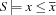 holds.
holds. Analogously, denotes the smallest integer such that 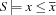 holds.
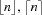
Let n denote a real number.  denotes the largest integer which is equal or smaller than n. Analogously,
denotes the largest integer which is equal or smaller than n. Analogously,  denotes the smallest integer which is equal or larger than n.
denotes the smallest integer which is equal or larger than n.
-
sum {FD.sum*Dv+A*D}creates a propagator for

For the operational semantics see
FD.sumC. For the relation symbol'\\=:', the propagator waits until at most one non-determined variable is left. Then the appropriate value is discarded from the variable's domain. For the other relations, the propagator does interval propagation.-
sumC {FD.sumC+Iv*Dv+A*D}creates a propagator for the scalar product of the vectors
IvandDv:
Let
 be
be Dand 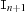 be -1. Then, the operational semantics is defined as follows. For each product , an isolation (projection) is computed:
, an isolation (projection) is computed:
For the right hand side
 , the upper
, the upper  and lower limit
and lower limit  are defined as follows.
are defined as follows.
These values are used to narrow the domain of
 until a fixed point is reached. We describe the propagation for the different possible values of
until a fixed point is reached. We describe the propagation for the different possible values of A.'=<:'Narrowing is done according to the following inequalities.


Here 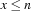 denotes the basic constraint
 and 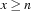 denotes the basic constraint
and 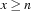 denotes the basic constraint  .
. The propagator ceases to exist, if the following condition holds.

As an example consider
X - Y =<: Z - VWe have the following narrowing.
![\codeinline{oz}{X} \leq \overline{\codeinline{oz}{Z}} - \underline{\codeinline{oz}{V}} + \overline{\codeinline{oz}{Y}}
\quad \quad
\codeinline{oz}{Y} \geq \underline{\codeinline{oz}{X}} - \overline{\codeinline{oz}{Z}} + \overline{\codeinline{oz}{V}}
\quad \quad
\codeinline{oz}{Z} \geq \underline{\codeinline{oz}{X}} - \overline{\codeinline{oz}{Y}} + \underline{\codeinline{oz}{V}}
\quad\quad
\codeinline{oz}{V} \leq \overline{\codeinline{oz}{Z}} - \underline{\codeinline{oz}{X}} + \overline{\codeinline{oz}{Y}}](latex54.png)
The propagator ceases to exist if 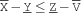 holds.
'>=:'This case can be reduced to
=<:due to the observation that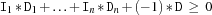
is equivalent to
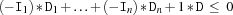
Alternatively,
can be used for the definition. '<:'Analogous to
'=<:''>:'Analogous to
'>=:''=:'In this case, the operational semantics is defined by conjunction of the formulas given for
=<:and>=:. Furthermore, coreferences are realized in that, e. g. the propagator3*X=:3*Ytells the basic constraintX=Y.'\\=:'In this case, the propagator waits until at most one non-determined variable is left, say
. Then, denotes a unique integer value which is discarded from the domain of .
Additional propagation is achieved through the realization of coreferences, i. e. equality between variables. If the store
Sentails (without loss of generality) 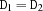, the generic propagator evolves into: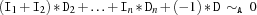
-
sumCN {FD.sumCN+Iv*Dvv+A*D}creates a propagator for

Let
 be
be D, be -1, and be 1. Then, the operational semantics is defined as follows. For 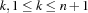, an isolation (projection) is computed:
be 1. Then, the operational semantics is defined as follows. For 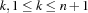, an isolation (projection) is computed: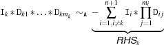
For the right hand side
, the upper and lower limit are defined as follows.![~$~
\begin{eqnarray*}
\overline{\mbox{\mbox{\sl RHS}}_k} \ =\
-\sum_{i =1, i\neq k, {\tt I}_i > 0}^{n+1} {\tt I}_i *
\prod_{j=1}^{m_i}\underline{{\tt D}}_{ij} \;-\;
\sum_{i =1, i\neq k, {\tt I}_i < 0}^{n+1} {\tt I}_i *
\prod_{j=1}^{m_i}\overline{{\tt D}}_{ij}
\\
\underline{\mbox{\mbox{\sl RHS}}_k} \ = \
-\sum_{i =1, i\neq k, {\tt I}_i > 0}^{n+1} {\tt I}_i *
\prod_{j=1}^{m_i}\overline{{\tt D}}_{ij} \;-\;
\sum_{i =1, i\neq k, {\tt I}_i < 0}^{n+1} {\tt I}_i *
\prod_{j=1}^{m_i}\underline{{\tt D}}_{ij}
\end{eqnarray*}
~$~](latex65.png)
These values are used to narrow the domain of
 until a fixed point is reached. We describe the propagation for the different possible values of
until a fixed point is reached. We describe the propagation for the different possible values of A.'=<:'The narrowing is done according to the following inequalities.

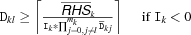
Here denotes the basic constraint
and denotes the basic constraint . The propagator ceases to exist, if the following condition holds.

As an example consider
3*X*Y - Z =<: AWe have the following formulas.
![\codeinline{oz}{X} \leq \left\lfloor \frac{\overline{\codeinline{oz}{A}} +
\overline{\codeinline{oz}{Z}}}{3*\underline{\codeinline{oz}{Y}}} \right\rfloor
\quad \quad
\codeinline{oz}{Y} \leq \left\lfloor \frac{\overline{\codeinline{oz}{A}} +
\overline{\codeinline{oz}{Z}}}{3*\underline{\codeinline{oz}{X}}} \right\rfloor
\quad \quad
\codeinline{oz}{Z} \geq \underline{\codeinline{oz}{X}} *\overline{\codeinline{oz}{Y}} - \overline{\codeinline{oz}{A}}
\quad \quad
\codeinline{oz}{A} \geq \underline{\codeinline{oz}{X}} *\overline{\codeinline{oz}{Y}} - \overline{\codeinline{oz}{Z}}](latex70.png)
The propagator ceases to exist if 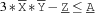 holds.
'>=:'This case can be reduced to
'=<:'due to the observation that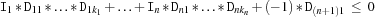
is equivalent to
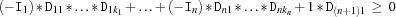
Alternatively,
can be used for the definition. '<:'Analogous to
'=<:''>:'Analogous to
'>=:''=:'In this case, the operational semantics is defined by conjunction of the formulas given for
'=<:'and'>=:'.'\\=:'In this case, the propagator waits until at most one non-determined variable is left, say
 . Then, denotes a unique integer, and if
. Then, denotes a unique integer, and if 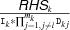
denotes an integer value, this value is discarded from the domain of 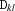.
Coreferences are not exploited for nonlinear generic constraints. The only exception is the expression
X * X =: Ywhich has the same operational semantics as
{FD.times X X Y}(but note that the occurring variables are not automatically constrained to finite domain integers).-
sumAC {FD.sumAC+Iv*Dv+A*D}creates a propagator for the absolute value of the scalar product of the vectors
IvandDv:
The operational semantics is as follows. If
Ais'<:','=<:'or'\\=:', the following definition holds.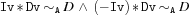
If
Ais'>:','>=:'or'=:', the following definition holds.where the disjunction is realized by constructive disjunction.
-
sumACN {FD.sumACN+Iv*Dvv+A*D}creates a propagator for

The operational semantics is defined analogously to
FD.sumAC.-
sumD {FD.sumD*Dv+A*D}creates a propagator analogous to
FD.sumbut performs domain-consistent propagation. Note that only equality (Ais'=:') and disequality (Ais'\\=:') are supported, as for inequalities domain and bounds propagation are equivalent.-
sumCD {FD.sumCD+Iv*Dv+A*D}creates a propagator analogous to
FD.sumCbut performs domain-consistent propagation. Note that only equality (Ais'=:') and disequality (Ais'\\=:') are supported, as for inequalities domain and bounds propagation are equivalent.